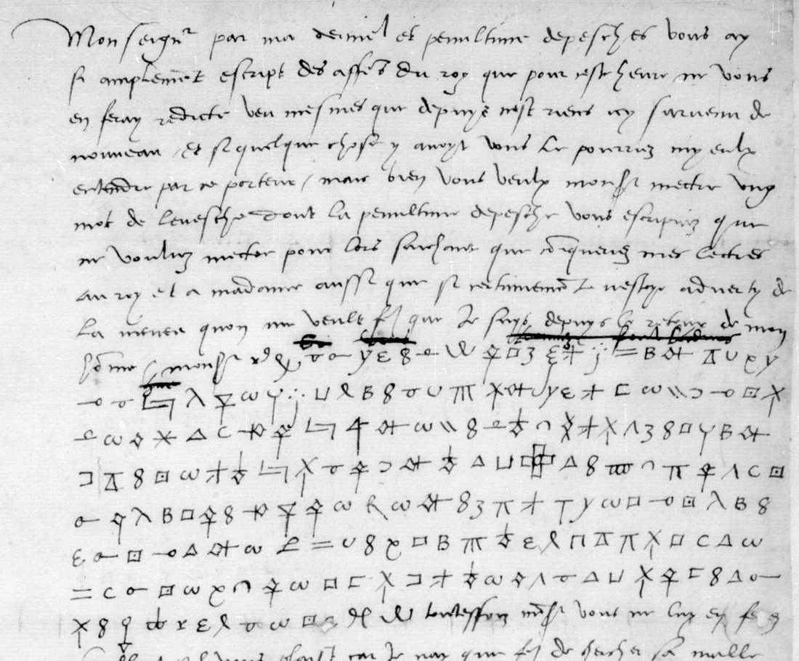
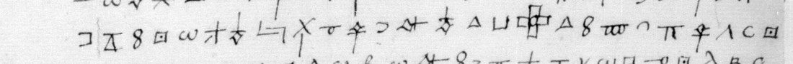

At a glanceExisting decipherment (Scheurer 1969, Le Grand 1688, Bourrilly 1905) · 16 June block: 191 of 194 signs given a value here
- The letters
- Jean du Bellay, bishop of Bayonne and French ambassador in London, to Anne de Montmorency, grand master of France: five letters of 1528–29 with passages in cipher, plus a sixth found in the same volume (16 June 1529).
- Where
- Bibliothèque nationale de France, fr. 3077 and fr. 3078 (catalogue item 4). The 16 June letter is fr. 3078 p. 21, DECODE R3688, catalogued there as not decrypted. The BnF notice gives day and month but no year.
- The cipher
- “Bayonne’s cipher” of 1529: an alphabet of drawn symbols with two to five signs for each letter, a few nulls, and single signs for words such as roy, madame, vous, faict.
- How it was done
- The five letters were matched to their printed texts once their years were known. The key was re-derived from a sibling letter of 22 June 1529 that has the decipherer’s reading written over every sign. With it, lines 0–6 of the 16 June block were deciphered from the leaf before any printed text was found. Scheurer’s edition then supplied three word signs and the last line, and agrees word for word.
- What it says
- On the Cambrai peace talks of summer 1529: du Bellay advises that the powers for the treaty be dated
de ce temps là et du lieu ou sera le Roy
. - Still open
- Three isolated signs in the last cipher line. Whether the boxed cross is one word sign or two (madame Marguerite here, le Cardinal on 17 October). The 22 October opening has not been compared with its leaf.
- Credit
- Rémy Scheurer, Correspondance du cardinal Jean du Bellay t. I (1969), prints both passages in clear: no. 12 p. 41 (16 June) and pp. 111–112 (22 October). The other letters are in Joachim Le Grand (1688) and in Bourrilly and de Vaissière (1905). Satoshi Tomokiyo’s table of the cipher (Cryptiana) was the starting point for the key.
01 The letters of the item
Jean du Bellay was ambassador of François I in England from 1527 to 1529, in the years of Henry VIII’s divorce suit and Wolsey’s fall. His despatches to Montmorency are bound in BnF fr. 3077 and fr. 3078 by day and month, across several years. Omont’s inventory, followed by the BnF notice, gives only the day and month and calls the letters lettre chiffrée
or avec chiffre
. The catalogue took this to mean that no decipherment was known. Once each letter was dated from its content and matched to Le Grand’s Histoire du divorce (1688), Brewer’s Letters and Papers IV and Bourrilly’s edition of the first embassy (1905), all five turned out to be printed in clear:
| Notice | Date | Leaf | Printed in clear | DECODE |
|---|---|---|---|---|
| fr. 3078 no. 5 | 15 June 1529 | pp. 31–33 | Le Grand III 323–326; L&P IV 5679 | R3690 |
| fr. 3077 no. 18 | 18 Sept 1529 | f. 113 | Le Grand III 354–359; L&P IV 5945 | R4252 |
| fr. 3077 no. 20 | 4 Oct 1529 | f. 125 | Le Grand III 359–363; L&P IV 5983 | R4253 |
| fr. 3078 no. 17 | 17 Oct 1529 | pp. 113–117 | Le Grand III 369–375 (from the deciphered copy, Clair. 330 f. 71); L&P IV 6011 | R3691 |
| fr. 3078 no. 19 | 27 Oct 1529 | pp. 133–134 | Le Grand III 379–381; L&P IV 6030 | R3692 |
| fr. 3077 no. 23 | 28 Oct 1528 | pp. 145–147 | Bourrilly and de Vaissière 1905, no. 156, with the key of the first cipher, which they recovered | R4254 |
The 1528 letter is in du Bellay’s first cipher, which Bourrilly’s editors broke (nous en avons retrouvé la clef qui était perdue
) and George Lasry solved again in 2022. The 1529 letters use a second cipher, described below.
Two more passages came up in the sweep of the volumes. The first is fr. 3078 no. 3, 16 June 1529 (p. 21), a clear letter with eight lines of cipher in the middle. It is not in Le Grand, Brewer or Bourrilly, and DECODE lists it as not decrypted. The second is the opening of 22 October 1529, which is not in these volumes (a copy is fr. 3005 f. 165). Le Grand prints the rest of that letter with the note le commencement de cette lettre est en chiffre non déchiffré
. Brewer (L&P IV 6019) and Tomokiyo say the same. A DECODE search for the same correspondence found one more letter, fr. 3040 f. 68 (R4229), of 30 June 1529. It is also printed in clear by Le Grand (III 333 ff.) and calendared in L&P IV 5742.
Both of the passages left blank in 1688 are printed in clear in Rémy Scheurer’s Correspondance du cardinal Jean du Bellay, t. I (1969): the 16 June block as letter no. 12, p. 41, and the 22 October opening on pp. 111–112. So nothing in the item is without a printed decipherment. Scheurer’s volume was seen only in Google Books snippets.
02 Bayonne’s cipher of 1529 and its key
Tomokiyo reconstructs the cipher from two deciphered letters of June 1530 (Clair. 333 ff. 24, 27). It is a homophonic alphabet of drawn signs, with two to four signs for most letters, a few nulls, and word signs for roy and madame. There is no k or w, and u and v are one letter. Paul Friedmann’s nineteenth-century reconstruction is BnF NAF 4206 no. 5 (DECODE R9467), but no image is attached to that record.
The key used here was re-derived from fr. 3078 itself. The letter of 22 June 1529 (pp. 23–27, DECODE R3689) has the Court decipherer’s reading written above every cipher sign, and Le Grand prints its clear text, so sign and letter can be lined up one by one. This added signs that are not in Tomokiyo’s table: B and ∩ for o and a, and the word signs V = bien, R = fault and —ʔ = paix. Some examples:
| Letter | Signs | Letter | Signs |
|---|---|---|---|
| a | c ∪ ⊔ ∩ ɔ | o | 3 ε B |
| e | ω ✝ ✗ | p | Λ λ H |
| i | —o o— ⊽ | r | ⊡ □ |
| l | △ ⧋ ẍ | s | ʊ —e ᒐ |
| m, n, t | a diamond with a stem (m), with a side cross (n), on a cross (t) | u/v | 8 ℓ y ξ |
The same key reads the catalogue’s 17 October letter (pp. 113–117) directly from the leaf. That letter is four pages of cipher with no interlinear decipherment, and the first lines of p. 113 give j’ay est[é] veoir [le Cardinal] en ses e[nnuis], ou que l’y ay trouvé le plus grant exemple, as in Le Grand III 370. This was a check of the key, not a new text.
03 The block of 16 June 1529 (fr. 3078 p. 21)
The letter is in clear except for eight lines. In the clear part du Bellay writes about a bishopric he hopes for and la menée qu’on me veult faire
against him, and asks Montmorency to send his decision with the next despatch. The cipher begins after Monsr, where some clear words have been struck out, and the clear text resumes with Toutesfoiz, Monsr, vous ne luy en ferez semblant.

The block was transcribed sign by sign from the high-resolution crop on DECODE: 194 signs in eight lines (p21_signs.txt; an earlier count of 167 had skipped line 6). Before any printed text was known, lines 0–6 had been deciphered with the key above and Tomokiyo’s table:
si vous [?] trouvez bon l’advis que piecza vous ay envoé de faire semblant que madame ne fust allée pour conclure, et qu’estant là [boxed cross] luy ayt par importunité [R] envoyé querir pouoir, il ne [ℒ] faudroyt oublyer a le faire dater de ce temps là et du lieu …
This pass also fixed several signs. ẍ (x over x) is l, as in allée. ⊑ is q and stands for que. ⊽ is i, as in piecza and importunité. The diamond signs split into m, n and t by their stroke. One “=” stands for b in bon, where it is f everywhere else, which is either a slip or a homophone.
Scheurer’s edition then turned up. His letter no. 12 prints the whole block in clear, and it agrees with the reading from the leaf word for word. It also gave what the leaf reading lacked: ℒ = vous; R = faict here (the 22 June gloss has fault, so R is the word sign for fault/faict); the boxed cross with a loop at its centre = madame Marguerite; and line 7 = ou sera le Roy, ending in ꝛe, Tomokiyo’s word sign for roy. The sign ꝡ, which comes after vous in line 0 and after roy in line 7, has nothing matching it in the print either time, so it is a null.
The deciphered block, signs to letters, as transcribed here (word signs in small capitals in the reveal):
Monsr, si vous trovez bon l’advis que piecza vous ay envoé de faire semblant que Madame ne fust allée pour conclure, et qu’estant là madame Marguerite luy ayt par importunité faict envoyé querir pouoir, il ne vous faudroyt oublyer a le faire dater de ce temps là et du lieu ou ser[a le] Roy.
My lord, if you approve the advice I sent you some time ago, to give out that Madame had not gone [to Cambrai] in order to conclude, and that, Madame Marguerite being there, she pressed her into sending for powers, you must not forget to have them dated from that time and from the place where the King will be.
Madame is Louise of Savoy and Madame Marguerite is Margaret of Austria, who were about to negotiate the Peace of Cambrai (signed 3 August 1529). Du Bellay’s advice seems to be about presentation in England: the French powers should look as if they had been asked for at Cambrai, not prepared in advance.
There are two small differences from the snippet of Scheurer’s text. The signs give et qu’estant là madame Marguerite (⊑ ✗ -ʊ- t a n t l a), where the snippet shows et que ostant madame Marguerite
, which is probably a misprint or an OCR slip. And envoyé in line 1 is enciphered envoe, with no y. Of the 194 signs, 191 have a value (a letter, a word sign or a null), 98.5%. Every word of Scheurer’s text is accounted for by the signs.

04 The opening of 22 October 1529
Le Grand (III 377–379) and Brewer (L&P IV 6019) print this letter from Escripvant ceste lectre, ay sceu que monsr le Legat vient d’estre mys hors de sa maison
onward and say that the opening is in cipher with no decipherment. Tomokiyo lists the copy, fr. 3005 f. 165, as unread. Scheurer (pp. 111–112) prints the letter from its first words, Monseigneur, la ou je vouldroye, si ne me sçauroye-je guarder d’accorder au cardinal d’York sa requeste, about a request Wolsey sent through an Italian servant who was still loyal to him (Agostino, his physician, according to Scheurer’s note). The snippets do not show whether Scheurer deciphered the passage himself or found a deciphered copy. It has not been compared with the cipher here: fr. 3005 is on Gallica only, which refused scripted requests during this work, and the leaf has no DECODE record.
05 Method and what was independent
- The years of the five catalogue letters were found from their content and matched to Le Grand, Brewer and Bourrilly. That closed the item as already deciphered.
- The key was re-derived from the 22 June interlinear decipherment and Tomokiyo’s table, and checked on the 17 October letter against Le Grand.
- The 16 June block was transcribed and its lines 0–6 deciphered from the leaf before Scheurer was found. These lines hold 181 of the 194 signs, and only four of them were left without a value: ꝡ, ℒ, R and the boxed cross. That part of the reading is independent of the print. The values of those four (ꝡ a null, ℒ vous, R faict, the boxed cross madame Marguerite) and the reading of line 7 came from Scheurer.
- Scheurer’s text for the 22 October opening was not checked against any cipher.
06 What remains uncertain
- Three signs in line 7 of 16 June. Between lieu and ou are three signs with no counterpart in the print: ρ with a triangle foot, ȸ, and a small x. ȸ is probably Tomokiyo’s ƒ-shaped null; the other two are unexplained. A smudged sign stands where the print has a le before Roy. These are probably nulls or a slip, and they are too few to settle.
- The boxed cross: one sign or two? On p. 21 Scheurer’s text gives the boxed cross as madame Marguerite. On p. 113 (17 October) a boxed cross lines up with le Cardinal in Le Grand’s text. The p. 21 sign has a loop at the centre of the cross, so the two may be different word signs. If they are the same sign, one of the two identifications is wrong. The p. 113 sign has not been re-examined to tell them apart, and this question is left open.
- Scheurer’s text was seen only as Google Books snippets. A full copy would confirm estant against ostant and show which copy he used for 22 October.
- 22 October 1529. The opening has not been compared sign by sign with fr. 3005 f. 165.
07 Sources
- Bibliothèque nationale de France, fr. 3078 (Gallica btv1b9060311s; p. 21 = view 21) and fr. 3077 (btv1b90599292). DECODE R3688 (16 June 1529), R3689 (22 June, interlinear), R3690, R3691, R3692, R4252, R4253, R4254, R4229 (fr. 3040 f. 68, 30 June 1529), R9467 (Friedmann’s key, no image).
- Rémy Scheurer (ed.), Correspondance du cardinal Jean du Bellay, t. I, 1529–1535 (Paris, 1969), no. 12 p. 41 and pp. 111–112, seen through Google Books (eNw8AAAAIAAJ, snippet view).
- Joachim Le Grand, Histoire du divorce de Henry VIII, t. III, Preuves (Paris, 1688), pp. 318–400 (MDZ bsb10280117).
- J. S. Brewer (ed.), Letters and Papers, Foreign and Domestic, Henry VIII, vol. IV (1875–76), nos. 4879, 5679, 5742, 5945, 5983, 6011, 6019, 6030 (British History Online).
- V.-L. Bourrilly and P. de Vaissière (eds.), Ambassades en Angleterre de Jean du Bellay (Paris, 1905), no. 156 (archive.org ambassadesenangl00dube).
- Satoshi Tomokiyo, Cryptiana: “Bayonne’s Cipher (1529)” on the François I page, and George Lasry’s solution of the 1528 cipher on the GL page.
Transcription, key notes and working files: targets/dubellay/.